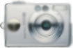

Fotorenamer help page Perform the following steps to use the application:
What's the application purpose? Normally digital camera's picture names are: IMG_number.jpg Unfortunately you do not get a clue on when the picture was taken. Many camera applications change the date of the image to the date it was written on your hard disc. Therefore the application extracts picture EXIF data and writes the original creation date as a new file name.The relevant naming schema is: YYYYMMDD_HHMM_IMG_number.jpg A positive side effect of ISO-date formats is its naturally sortable by creation date.EXAMPLE Your picture IMG_1865.jpg will become20031020_1417_IMG_1865.jpg if your picture was taken on 2003-10-20 at 2:17 pm.© Idea/Author Aiki IT, Berlin Last update: 2015-12-27 |